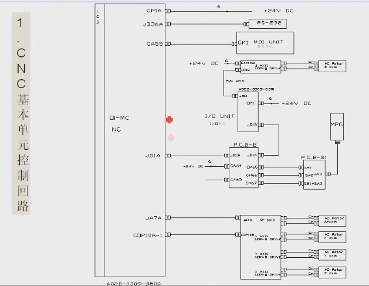
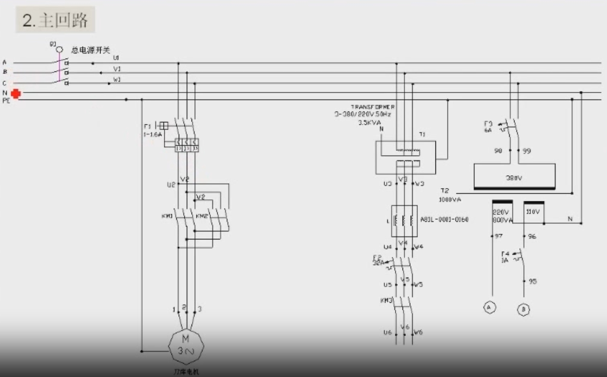
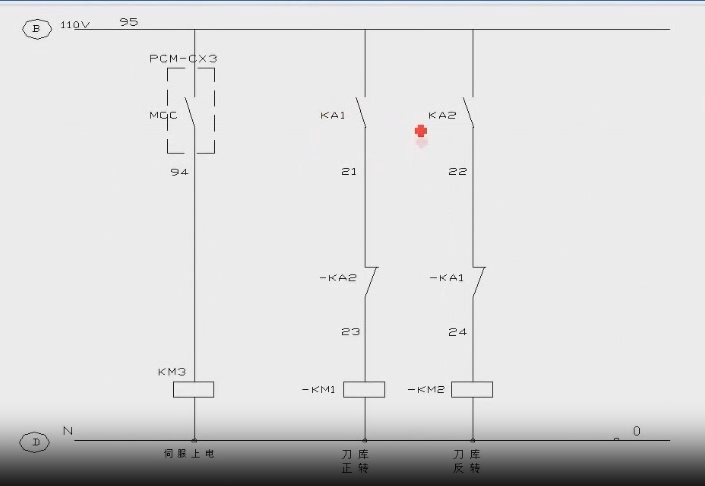
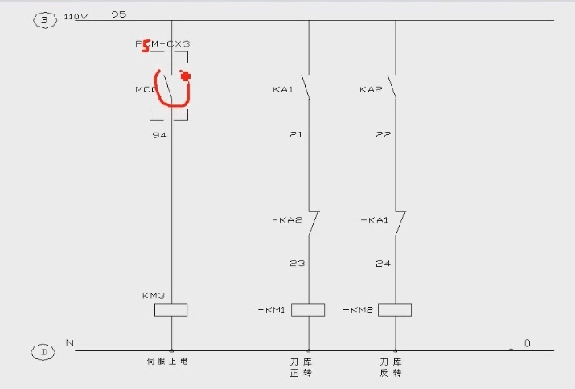
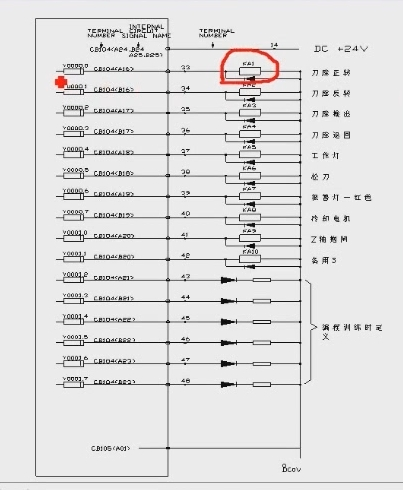
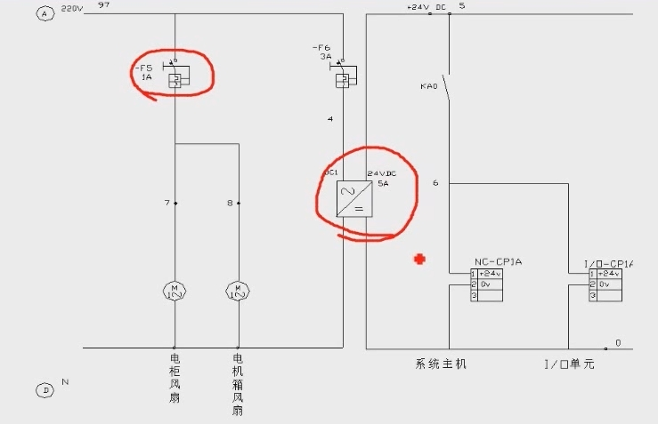
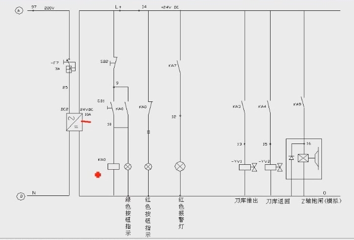
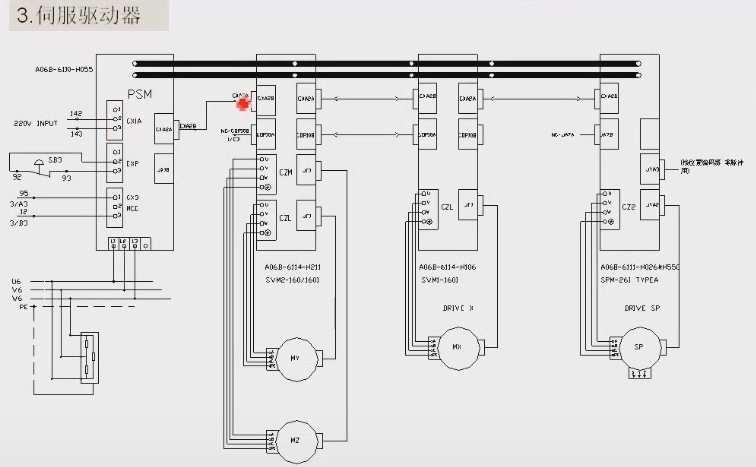
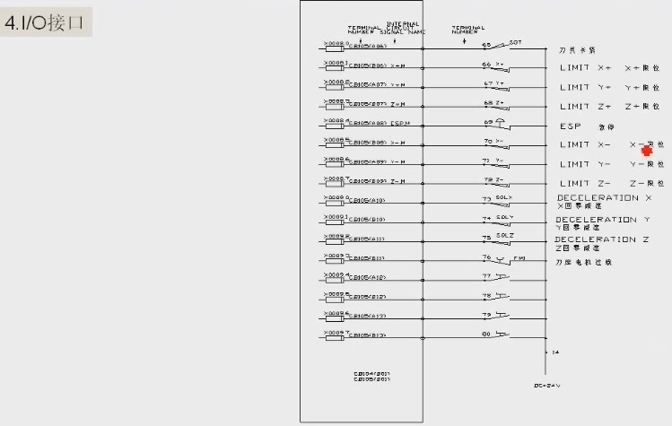

伺服正常：MCC 閉合
Y0.0 刀庫正轉
Y0.1 刀庫反轉
看點：Y0.0 → KA1 → KM1（正轉）；Y0.1 → KA2 → KM2（反轉）。KA1 的常閉觸點串在 KM2 回路，KA2 的常閉觸點串在 KM1 回路，兩者互鎖。同時按下 Y0.0 與 Y0.1，KM1、KM2 都不會吸合。MCC 不閉合則 KM3（伺服上電）不吸合。
按下 SB1 啟動
按下 SB2 停止
Y0.6 → KA7 報警
看點：SB1 常開與 KA0 常開觸點並聯，形成自鎖；SB2 為常閉，按下切斷回路。KA0 吸合 → 綠燈亮、紅燈滅、CNC 與 I/O 單元得到 24 V。KA0 釋放（系統斷電）→ 紅色按鈕指示燈亮。
輸入 X 演示
按下急停（ESP，常閉）
刀具夾緊開關動作（常開）
X8.4 = 1 正常
X8.0 = 0 刀具鬆開
輸入 X（CB105）
| 地址 | 端子 | 信號 |
|---|---|---|
| X8.0 | 65 | 刀具夾緊 |
| X8.1 / 8.2 / 8.3 | 66–68 | X+ / Y+ / Z+ 限位 |
| X8.4 | 69 | ESP 急停 |
| X8.5 / 8.6 / 8.7 | 70–72 | X− / Y− / Z− 限位 |
| X9.0 / 9.1 / 9.2 | 73–75 | X / Y / Z 回零減速 |
| X9.3 | 76 | 刀座電機過載 |
| X9.4–9.7 | 77–80 | 備用 |
輸出 Y（CB104）
| 地址 | 端子 | 繼電器 | 負載 |
|---|---|---|---|
| Y0.0 | 33 | KA1 | 刀庫正轉 |
| Y0.1 | 34 | KA2 | 刀庫反轉 |
| Y0.2 | 35 | KA3 | 刀庫推出 |
| Y0.3 | 36 | KA4 | 刀庫退回 |
| Y0.4 | 37 | KA5 | 工作燈 |
| Y0.5 | 38 | KA6 | 鬆刀 |
| Y0.6 | 39 | KA7 | 報警燈（紅） |
| Y0.7 | 40 | KA8 | 冷卻電機 |
| Y1.0 | 41 | KA9 | Z 軸抱閘 |
| Y1.1 | 42 | KA10 | 備用 3 |
| Y1.2–1.7 | 43–48 | — | 編程訓練時自行定義 |









原圖讀取同資料夾下的 images/，請與本網頁一起放置。